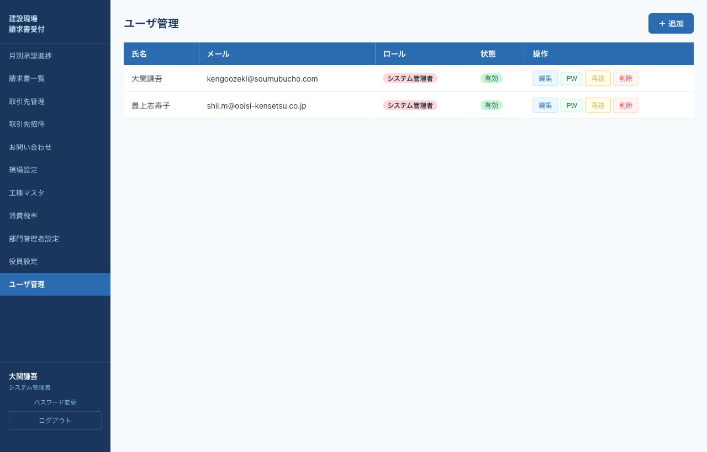
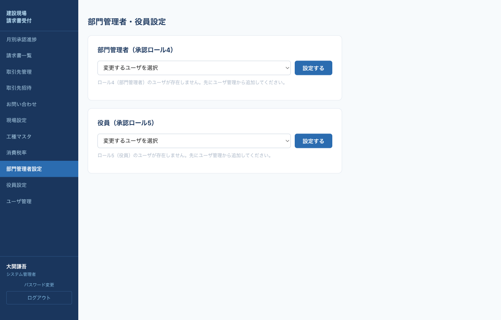

システム管理者の役割
システム管理者は全機能にアクセスできる最上位ロールです。総務管理者の全権限に加えて、以下を担当します。
- 内部ユーザ（所長・部門管理者・役員・総務・システム管理者）の追加／編集／削除
- 内部ユーザへの招待メール送信・パスワードリセット
- 部門管理者・役員の指名（ロール4・5の中から1名ずつ）
- 全ステージ（所長・部長・役員）の承認操作を代行可能
システム管理者の権限は非常に強力です。複数人で運用する場合は、誰がいつ何を変更したかを別途記録することを推奨します。
初期セットアップ手順
システム導入直後に1度だけ実行する初期設定です。順序が重要です。
| 順序 | 作業 | 担当画面 |
|---|---|---|
| 1 | 自分自身のパスワード変更 | パスワード変更 |
| 2 | 工種マスタを投入 | 工種マスタ |
| 3 | 消費税率を登録 | 消費税率 |
| 4 | 所長・部長・役員・総務の内部ユーザを追加 | ユーザ管理 |
| 5 | 現場マスタを追加し、所長を割当 | 現場設定 |
| 6 | 部門管理者・役員を指名（ロール4・5から） | 部門管理者設定 |
| 7 | 取引先を招待 | 取引先招待 |
ユーザ管理
内部ユーザの追加・編集・削除・パスワードリセット・招待メール再送を行います。

ユーザ管理画面
新規ユーザ追加
1
画面右上＋ 追加をクリック。
2
氏名・メールアドレス・ロールを入力。ロールは以下から選択：
- 1 システム管理者
- 2 総務管理者
- 3 所長
- 4 部門管理者
- 5 役員
3
追加・招待メール送信をクリック。招待メールには初期パスワードとログインリンクが含まれます。
ユーザ編集
各行の編集で、氏名・ロール・状態（有効／無効）を変更できます。メールアドレスは変更できません（削除後に追加し直してください）。
パスワードリセット
パスワードを忘れたユーザから依頼があった場合、該当行のPWボタンをクリック。モーダルが開くので、新しいパスワードを入力して設定する。

パスワードリセット
8文字以上必須。リセット後は本人に口頭・別チャネルで通知し、本人が初回ログイン後に自身でパスワード変更するよう案内してください。
招待メール再送
まだ本人がログインしていない場合、再送ボタンで招待メールを再送信できます。
ユーザ削除
削除ボタン。確認ダイアログが表示されます。
部門管理者・役員設定
承認フローの部門管理者（部長）と役員を指名します。システム全体でそれぞれ1名ずつです。

部門管理者・役員設定画面
1
左メニュー「部門管理者設定」または「役員設定」をクリック（どちらも同一ページに統合）。
2
「部門管理者（承認ロール4）」セクションでロール4ユーザを選択し設定する。
3
同様に「役員（承認ロール5）」セクションでロール5ユーザを選択し設定する。
選択肢に表示されるのは 各ロール（4 or 5）かつ有効状態 のユーザのみです。選択肢が空の場合は、先にユーザ管理で該当ロールのユーザを追加してください。
所長・部長・役員の承認を代行する
システム管理者は全ステージの承認操作が可能です。業務停滞を避けるために代行が必要な場合に使用します。
- 所長承認代行：所長マニュアル参照。請求書詳細→明細入力→承認
- 部長承認代行：部門管理者マニュアル参照。月別承認進捗→承認詳細→一括承認
- 役員承認代行：役員マニュアル参照。同上
代行した承認も通常承認と同じく記録・通知されます。必ず事前に関係者と合意の上で実施してください。
運用上の注意
- 初期管理者アカウント（システム導入時に設定）は1つしかないため、削除や無効化は絶対に行わないでください。
- システム管理者自身のパスワードは定期的に変更し、他者と共有しないでください。
- 取引先データ・承認履歴はAzure SQL Databaseに保存されています。本システムからのデータエクスポートは「請求書一覧」のCSVエクスポートのみです。